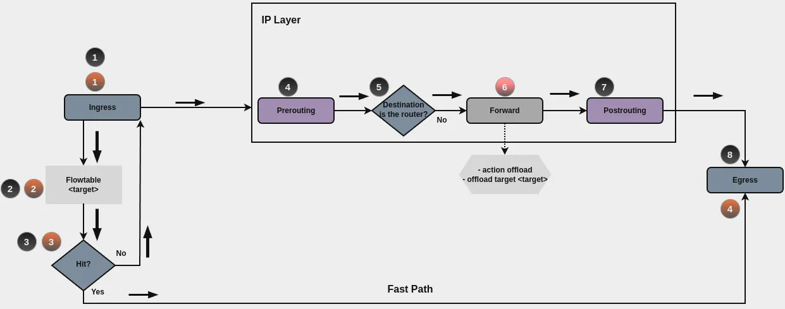

Flowtables Firewall Configuration
Call for Contributions
Help improve this section with additional content, examples, and explanations.
For contribution guidelines, see Write Documentation.
Overview
This section provides information on firewall configuration for flowtables.
To learn about the general traffic flow in VyOS firewalls, see Firewall.
- set firewall
* flowtable
- custom_flow_table
+ ...
Flowtables let you define a fastpath through the flowtable datapath. Flowtables support layer 3 (IPv4 and IPv6) and layer 4 (TCP and UDP) protocols.

After the first packet successfully traverses the IP forwarding path (black circles path), you can offload subsequent packets to the flowtable through your ruleset. You specify when to add a flow to the flowtable during forward filtering (red circle number 6).
When a packet finds a matching entry in the flowtable (flowtable hit), the system transmits it to the output netdevice. This means packets bypass the classic IP forwarding path and use the Fast Path (orange circles path). As a result, you do not see these packets from any Netfilter hooks after ingress. If no matching entry exists in the flowtable (flowtable miss), the packet traverses the classic IP forwarding path.
Note
Flowtable Reference: https://docs.kernel.org/networking/nf_flowtable.html
Flowtable Configuration
To use flowtables, you need to configure the following:
Create a flowtable that includes the interfaces that are going to be used by the flowtable.
Create a firewall rule. Set the action to
offloadand use your desired flowtable foroffload-target.
Creating a flow table:
Provide a description for the flow table.
Specify the offload type the flowtable uses: hardware or
software. The default is software offload.
Note
Hardware offload: Make sure your network interface controller (NIC) supports hardware offloading and that you have the necessary drivers installed before enabling this option.
Creating rules for using flow tables:
Create a firewall rule in the forward chain with the action set to
offload.
Create a firewall rule in the forward chain and specify which flowtable
to use. Only applicable if the action is offload.
Interface Selection
Important
Always configure the flowtable with the interface that VyOS observes at the forward hook — which is not necessarily the physical interface. When traffic is received or transmitted via a logical interface, VyOS tracks that logical interface, not the underlying physical device. Registering the wrong interface in the flowtable causes every flow lookup to miss, falling back to the classic forwarding path and defeating the purpose of fast-path offload.
Configuration Example
Consider the following in this setup:
This example uses two interfaces in the flowtables:
eth0andeth1.The example provides a minimal firewall ruleset with filtering rules and rules for using flowtable offload capabilities.
The first packet is evaluated by the firewall path, so a desired connection should be explicitly accepted. The same should occur for traffic in reverse order. In most cases, state policies are used to accept a connection in the reverse path.
In the following example only traffic coming from interface eth0,
TCP protocol, and destination port 1122 is accepted.
All other traffic to the router is dropped.
Commands
set firewall flowtable FT01 interface 'eth0'
set firewall flowtable FT01 interface 'eth1'
set firewall ipv4 forward filter default-action 'drop'
set firewall ipv4 forward filter rule 10 action 'offload'
set firewall ipv4 forward filter rule 10 offload-target 'FT01'
set firewall ipv4 forward filter rule 10 state 'established'
set firewall ipv4 forward filter rule 20 action 'accept'
set firewall ipv4 forward filter rule 20 state 'established'
set firewall ipv4 forward filter rule 20 state 'related'
set firewall ipv4 forward filter rule 110 action 'accept'
set firewall ipv4 forward filter rule 110 destination address '192.0.2.100'
set firewall ipv4 forward filter rule 110 destination port '1122'
set firewall ipv4 forward filter rule 110 inbound-interface name 'eth0'
set firewall ipv4 forward filter rule 110 protocol 'tcp'
Explanation
Here’s what happens for a desired connection:
A packet arrives on
eth0with destination address192.0.2.100, TCP protocol, and destination port 1122. Assume this address is reachable through interfaceeth1.For this first packet, the connection state is new. Neither rule 10 nor rule 20 applies.
Rule 110 matches, so the connection is accepted.
When the server 192.0.2.100 replies, the connection state becomes established, and rule 20 accepts the reply.
The router receives the second packet for this connection. Because the connection state is established, rule 10 matches and adds a new entry in the flowtable FT01 for this connection.
Subsequent packets skip the traditional path and use the Fast Path for offloading.
Flowtable Configuration on Logical and Sub-Interfaces
Configure the flowtable with the interface name you used in VyOS
configuration. When VLANs, bonds, or bridges are involved, that is the
logical interface (bond0, br0, eth0.10) — not the underlying physical
port.
For example:
If
bond0is configured, VyOS seesbond0— noteth0oreth1If
br0is configured, VyOS seesbr0— not its member interfacesThe flowtable must reference the same interface name VyOS observes
Two forms are accepted, but registering the parent is recommended:
Registering
bond1offloads the parent interface and all its VLAN sub-interfaces (bond1.10,bond1.20, etc.) — the kernel automatically discovers them by parsing L2 headers (Linux 5.13+).Registering
bond1.10directly offloads only VLAN 10 traffic. But the sub-interface must exist at commit time; if it is not yet present when the ruleset is loaded, the configuration might fail.
# Offload bond1 and all sub-interfaces (bond1.10, bond1.20, ...)
set firewall flowtable FT01 interface 'bond1'
# Offload VLAN 10 only: register the sub-interface directly
set firewall flowtable FT01 interface 'bond1.10'
Example: Mixed parent and sub-interface offload
Consider a setup where:
Traffic ingresses on
bond1.10(VLAN 10)Traffic egresses on
bond2.20(VLAN 20)
set firewall flowtable FT01 interface 'bond1'
set firewall flowtable FT01 interface 'bond2.20'
set firewall ipv4 forward filter default-action 'drop'
set firewall ipv4 forward filter rule 10 action 'offload'
set firewall ipv4 forward filter rule 10 offload-target 'FT01'
set firewall ipv4 forward filter rule 10 state 'established'
set firewall ipv4 forward filter rule 20 action 'accept'
set firewall ipv4 forward filter rule 20 state 'established'
set firewall ipv4 forward filter rule 20 state 'related'
set firewall ipv4 forward filter rule 200 action 'accept'
set firewall ipv4 forward filter rule 200 inbound-interface name 'bond*'
In this configuration:
bond1covers ingress frombond1.10and any otherbond1sub-interfaces.bond2.20offloads VLAN 20 only — otherbond2sub-interfaces remain on the standard forwarding path. This illustrates how to selectively offload a single VLAN while leaving others on the slow path.Rule 200 uses a wildcard to accept any traffic arriving on any bond interface or sub-interface before the flow reaches established state and is eligible for offload
Once a flow is established, rule 10 adds it to the flowtable and subsequent packets bypass the forward hook entirely via the fast path
Note
The interface directions in this example are from the perspective of
client-to-server traffic. In practice each interface handles traffic in
both directions, and the flowtable manages offload symmetrically once the
flow is established.
To confirm the ingress and egress interfaces, enable log on a rule in the
forward hook and check the firewall logs — see the
Firewall section for configuration.
Checks
Check the conntrack table to verify that the system accepted and properly offloaded connections.
vyos@FlowTables:~$ show firewall ipv4 forward filter
Ruleset Information
---------------------------------
ipv4 Firewall "forward filter"
Rule Action Protocol Packets Bytes Conditions
------- -------- ---------- --------- ------- ----------------------------------------------------------------
10 offload all 8 468 ct state { established, related } flow add @VYOS_FLOWTABLE_FT01
20 accept all 8 468 ct state { established, related } accept
110 accept tcp 2 120 ip daddr 192.0.2.100 tcp dport 1122 iifname "eth0" accept
default drop all 7 420
vyos@FlowTables:~$ show conntrack table ipv4
Original src Original dst Reply src Reply dst Protocol State Timeout Mark Zone
------------------ -------------- --------------- ------------------ ---------- ------- --------- ------ ------
198.51.100.100:41676 192.0.2.100:1122 192.0.2.100:1122 198.51.100.100:41676 tcp n/a 0
Interface identification
To verify that VyOS identifies traffic by its logical sub-interface and not the underlying physical device, inspect the firewall log:
vyos@FlowTables:~$ show log firewall
Jun 18 22:22:00 kernel: [ipv4-FWD-filter-200-A] IN=bond1.10 OUT=bond2.20 \
MAC=00:53:00:00:00:02:00:53:00:00:00:01:08:00 SRC=192.168.10.2 \
DST=192.168.20.2 LEN=84 PROTO=ICMP TYPE=8 CODE=0 ID=3572 SEQ=1
The IN and OUT fields show bond1.10 and bond2.20 — the logical
sub-interfaces — not the underlying physical or bond device.
Flowtable offload
Run the following command to verify that the connections are offloaded to the flowtable fast path:
vyos@FlowTables:~$ show conntrack table ipv4
Original src Original dst Reply src Reply dst Protocol State Timeout Mark Zone
------------------ ----------------- ----------------- ------------------ ---------- ------- --------- ------ ------
192.168.10.2:45140 192.168.20.2:5201 192.168.20.2:5201 192.168.10.2:45140 tcp n/a 0
192.168.10.2:45124 192.168.20.2:5201 192.168.20.2:5201 192.168.10.2:45124 tcp n/a 0
vyos@FlowTables:~$ show conntrack table ipv4
Original src Original dst Reply src Reply dst Protocol State Timeout Mark Zone
------------------ ----------------- ----------------- ------------------ ---------- --------- --------- ------ ------
192.168.10.2:45124 192.168.20.2:5201 192.168.20.2:5201 192.168.10.2:45124 tcp TIME_WAIT 105 0
Entries with Timeout shown as n/a and a blank State confirm that
the flows are offloaded to the flowtable fast path — subsequent packets
bypass the firewall entirely. Once the TCP session closes, the entry
transitions to TIME_WAIT and the timeout counter resumes.